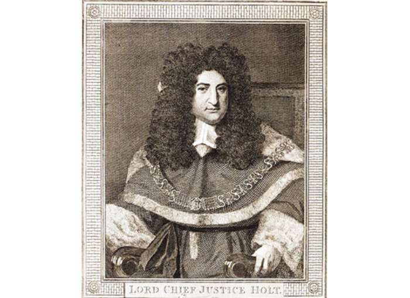

Sir John Holt - Chief Justice
Sir John Holt (23 December 1642 – 5 March 1710) was one of the most respected and influential English judges of the late seventeenth and early eighteenth centuries. He served as Lord Chief Justice of the King's Bench from 1689 until his death, a tenure spanning the reigns of William III, Mary II, and Anne. Holt is remembered for his independence, his defence of civil liberties, his hostility to slavery on English soil, and his decisive role in ending witchcraft prosecutions in England.
Early Life and Education
Holt was born in Abingdon-on-Thames, Berkshire (now Oxfordshire), the eldest son of Sir Thomas Holt, a serjeant-at-law and Member of Parliament, and Susan Peacock. Some older sources give his birthplace as nearby Thame and his birthdate as 30 December. He attended Abingdon School, briefly studied at Oriel College, Oxford (1658), and then trained at Gray’s Inn, where he had been admitted as a child. He was called to the bar in February 1663/4.
After a reportedly unruly youth, he applied himself seriously to the law and quickly gained a reputation for ability, clarity of thought, and integrity.
Legal and Political Career
During the turbulent 1670s and 1680s, Holt appeared in many high-profile cases. He defended the Earl of Danby and the Popish Lords, acted for the East India Company, and represented Lord Russell at his trial for the Rye House Plot. James II knighted him in 1685–86, appointing him Recorder of London and King’s Serjeant, but Holt resigned the Recordership rather than impose the death penalty on a deserter under martial law in peacetime.
After the Glorious Revolution, Holt played a leading role in the Convention Parliament of 1689 as one of the legal assessors to the House of Lords. He helped shape the constitutional settlement that brought William III and Mary II to the throne. On 17 April 1689, William III appointed him Lord Chief Justice of the King’s Bench, and he was sworn of the Privy Council.
Notable Rulings and Legacy
Holt’s twenty-one years on the bench produced many landmark decisions that advanced English law and civil liberties:
• Ashby v White (1703) — affirmed the right of a voter to sue for interference with his franchise.
• Coggs v Bernard (1703) — established foundational principles of bailment.
• Keeble v Hickeringill (1707) — the celebrated “duck-pond” case on property rights and interference.
• Slavery cases — he repeatedly ruled that slavery could not exist under the common law, stating that “as soon as a
negro comes into England he is free.”
• Witchcraft trials — he presided over numerous cases, acquitting every accused and exposing frauds, effectively
ending witchcraft prosecutions in England decades before the 1735 repeal of the Witchcraft Act.
He was offered the Great Seal (the Lord Chancellorship) in 1700 but declined, preferring to remain Chief Justice.
Personal Life and Death
In 1675 Holt married Anne Cropley, daughter of a baronet; the couple had no children. Later in life he purchased Redgrave Manor in Suffolk. Ill health forced him to withdraw from court in early 1710. He died in London on 5 March 1710, aged 67, and was buried in the chancel of St Mary’s Church, Redgrave, where his nephew erected a fine marble monument depicting Holt seated in his judicial robes.
Holt’s reported cases were published posthumously in 1738 and remain important sources for the development of English private law and constitutional principles. He is remembered as a judge who placed justice and liberty above political pressure, and whose rulings helped lay the foundations of modern civil rights protections in the common-law world.

Sir John Holt** (the 18th-century engraving and portrait). Portrait of Sir John Holt, domain via Wikimedia Common